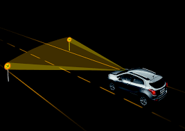

WTra. Web Traffic Signs
Who We Are
Hi,
We are Andreea Prodan and Dan-Gabriel Cazacu, two students at Faculty of Computer Science from Iasi.
We are following Software Engineering master studies.
What is this page about

Currently we are following Web Application Development course sustained by Sorin Buraga and this page will be used to keep track of Web Traffic Sign project evolution .
This project is about creating a (micro-)service-base Web system able to detect traffic signs from a video received as input.
As sign recognition system will be used an existing open source project, the scope of the project being the creation of an OWL ontology and the creation of SPARQL end-point(s) for offering information about road signs: type, legal regulation, context of use, etc.
Current status

We created the architecture.
The main idea that the user will have to upload a video, and will receive a http status 201 created, if the upload will be with suceess, or 403 forbidden if the user is not authenticated.
The user will also could get all traffic signs from database. Same as above, only that he will receive 200 OK and the JSON list with the traffic sings if everything worked well.
Also he will be able to get traffic signs list that were found in a video, by the video id, and get traffic sign information by traffic sign id.
Next steps
- OAuth web service authentification
- Standard LogIn/SignUp authentification service
- Create traffic signs database
- Introduction of a video recording and recognition of signs
- OWL ontology creation
- SPARQL end-point creation